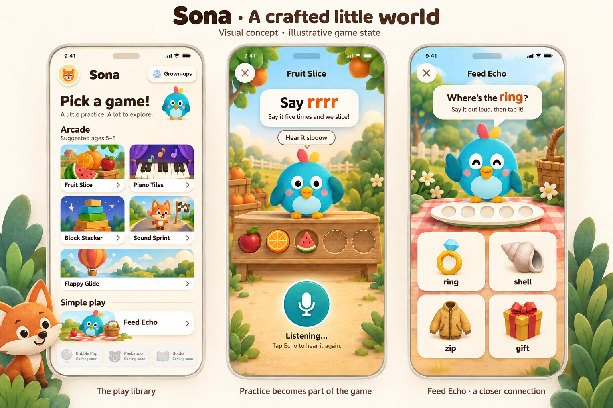
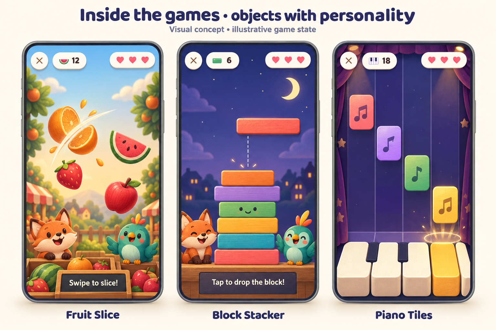
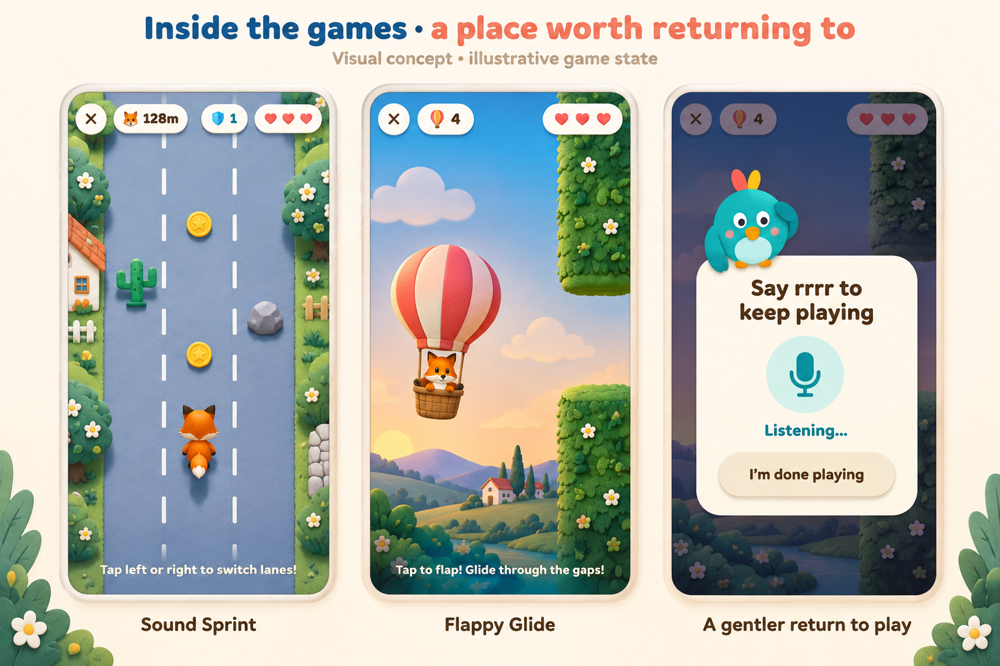
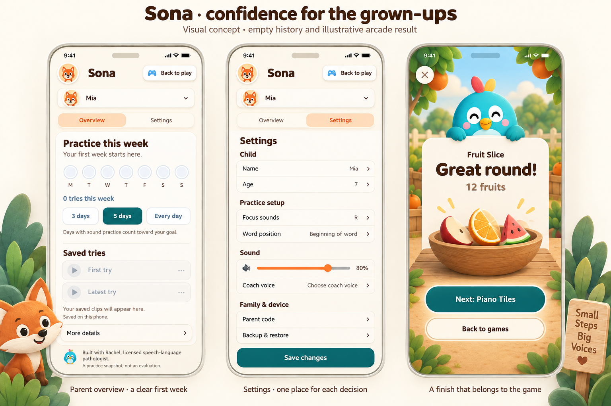
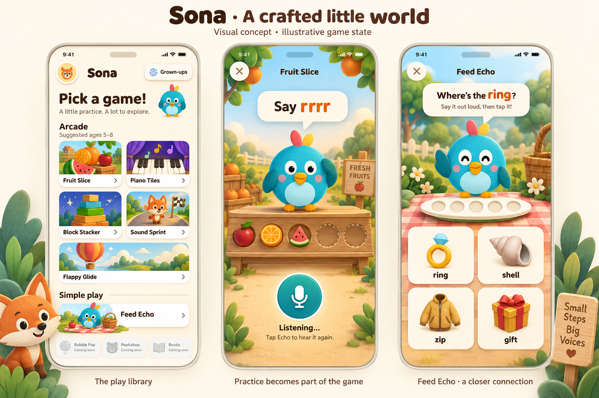
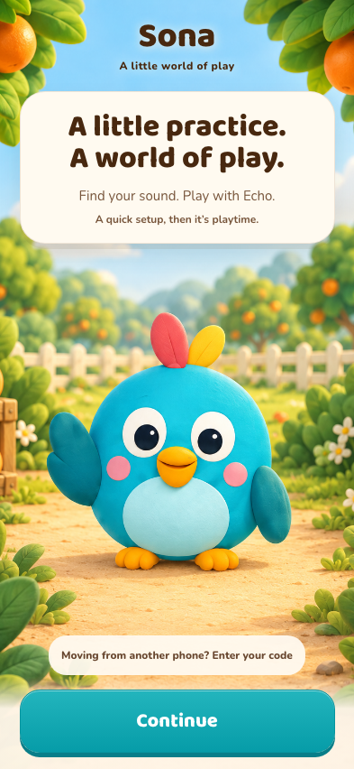

The main reference
Game library · Fruit Slice practice · Feed Echo. This is the exact board from Travis’s screenshot.

Inside the games
Fruit Slice · Block Stacker · Piano Tiles

More places to play
Sound Sprint · Flappy Glide · return-to-play prompt

For the grown-ups
Parent overview · settings · round results

Earlier version
The first library / practice / Feed Echo board. Use the revised board above when they differ.

First welcome screen
Implemented locally and checked at 393 × 852. The remaining onboarding screens and app redesign are still to come.
